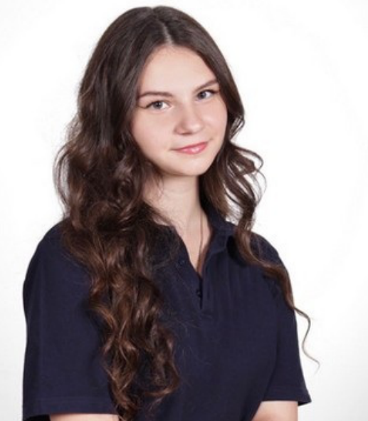
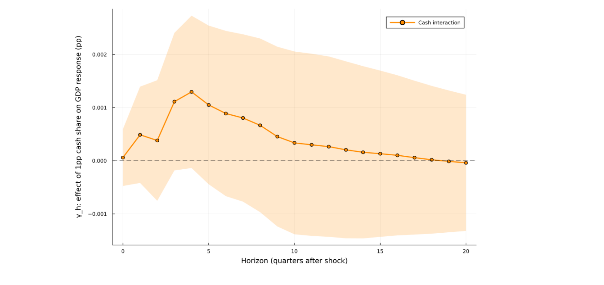

Final-year BSc in Econometrics and Operations Research. My thesis
measured how one European instrument lands differently across thirteen member states,
and what interests me is that gap: between a policy as designed and a policy as it
arrives. Looking for a research internship in European economic policy from early
2027.
Python · R · Stata · Julia · LaTeX
Greek national, EU citizen · Maastricht, Netherlands

Albanian, Greek passport, a semester in Rome, and six
languages that mostly happened by accident.
About
One rule, applied in twenty-seven countries, does not produce
twenty-seven identical results.
It is the question I keep coming back to, and it is not an abstract one for me. I
grew up between languages and countries, so the difference between a rule as written
and a rule as experienced was visible long before I had the tools to measure it.
My thesis measured exactly that: whether European Central Bank policy reaches
cash-intensive economies less forcefully than others, across thirteen member states.
It was graded 9.0 out of 10.
Since then I have been interning at an early-stage investment programme, where a
version of the same question comes up: what actually predicts whether someone
succeeds, and how do you make a decision defensible rather than instinctive.
Experience
Analyst Intern, Strategy & Analytics
Goatstarter Ventures B.V., Amsterdam
May 2026 – present
Built an applicant scoring model in Python that replaced a subjective
review process, turning a qualitative decision into a ranked, auditable one
Modelled time to a founder's first paying customer using survival
analysis, since most outcomes are censored: many participants have not succeeded
yet rather than failed
Derived a seven-criterion scorecard from the fitted model and validated it out
of sample, then audited it for disparate impact on characteristics it never sees
Presented findings to the people making the funding decisions, and defended the
model's assumptions
Chair, Lustrum Committee
Vectum, study association for Econometrics & Operations
Research, Maastricht University
Sep 2024 – Mar 2025
Led a team of six to deliver the association's anniversary programme,
including a gala evening and an alumni networking event
Owned budget, logistics and stakeholder communication end to end, across
students, alumni, university staff and external venues
Education
BSc Econometrics and Operations Research
Maastricht University, School of Business and Economics
Final year
Econometric Methods I & II · Macroeconomics and Finance · Mathematical
Statistics · Probability Theory · Optimization · Operations Research · Market
Design · Institutional Economics
Semester abroad
Università di Roma Tor Vergata
Completed Feb 2026
Research and projects
Does monetary policy work less well where people pay in cash?
Bachelor's thesis · supervised by Enrico Wegner · June 2026 ·
graded 9.0/10
Most channels through which interest rates reach the real economy run through bank
balance sheets. Cash payments do not. So policy should transmit more weakly where cash
is still dominant, and cash use varies enormously across the euro area: 22% of
point-of-sale transactions in the Netherlands against 62% in Austria.
I estimated structural VARs for thirteen euro-area economies, identified with
high-frequency interest rate surprises, then pooled the impulse responses in a
cross-country regression interacted with each country's cash share, clustering by
country. The attenuation appears where the mechanism predicts, at the horizons where
output troughs, and it survives dropping any single country.

Effect of a one-percentage-point higher cash share on the GDP
response to a contractionary surprise, by horizon, with 90% bands. It rises into the
trough and fades after quarter six.
Survival model of time to a first paying customer, reduced to a scorecard usable
during a call. Out-of-sample concordance 0.60, with a fairness audit on age and
gender.
Python · lifelines · Cox proportional hazards
Policy impact assessment
Assessed the economic impact of selected public policies using applied econometric
methods, and wrote the results up for a non-specialist reader.
Stata
Forecasting and optimisation for an industrial firm
Applied forecasting and optimisation methods to the operations of SABIC, working
from the firm's own data to a recommendation, in a team, to a deadline.
Julia · Java
Long-run temperature trends in the Netherlands
Built and validated a time-series model of Dutch climate trends, with model
selection and diagnostic testing.
R
Writing
The digital euro and the reach of monetary policy
Two pages on what my thesis implies for a central bank digital currency: if
transmission weakens where payments bypass banks, a digital euro is a monetary policy
instrument and not only a sovereignty one.
Of the thirteen economies in my sample, Greece is the one whose output response
has the opposite sign. Two pages on why, and on what it means for reading
cross-country averages.
Python, R and Stata daily. Julia for the thesis estimation. Java, LaTeX, Git.
Methods
Econometric modelling, time series and structural VARs, survival analysis,
regression and classification, forecasting, optimisation, mathematical statistics.
Data
Building cross-country panels from institutional sources, including ECB and
Eurostat APIs.
Languages
Albanian Native
English C1
French B2
Turkish B1
Italian Basic professional
Greek Basic
Contact
Looking for a research internship in European economic policy from early
2027
Brussels, Maastricht or remote. Quantitative work on policy questions, in an
institution where the results are meant to be used.